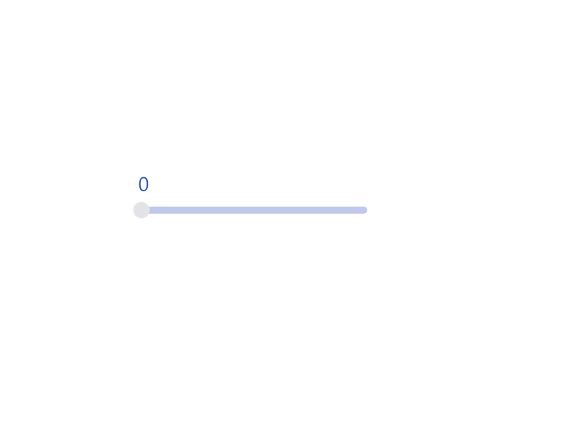

About Me
Fascinated by elegant and functional design, Anurag Kalra cares about creating products for the web. Anurag has a variety of experiences, ranging from software engineering to market research. He is currently interested in opportunities related to UX/UI design and web development.
Professional Experience
Anurag worked as a Cloud Developer Intern at CloudOps, where he focused on full-stack development in Java and JavaScript. Prior to this, he worked as a Software Engineering Intern at Blockchain. At Blockchain, Anurag worked on automated UI testing for an Angular-based web app, using technologies like JavaScript and Protractor. Before his experience at software companies, Anurag worked at TAG Energy Partners as an Investment Banking Intern, primarily conducting market research and due diligence in energy-related projects. Additionally, Anurag has worked at Goodnow Investment Group, where he conducted market research in the automotive industry.
Portfolio
Web Applications
Built using React
Built using React and Redux
Web Designs
Logo Designs
Artist commissioned logo. yung $eth is a recording artist based in Boston, MA.
Animations
